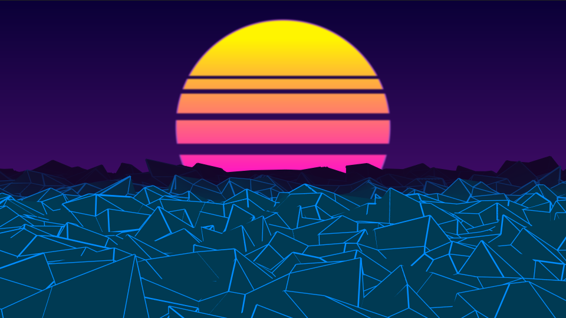
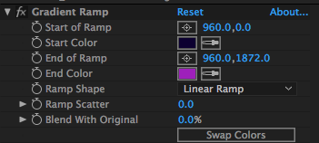
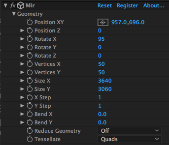
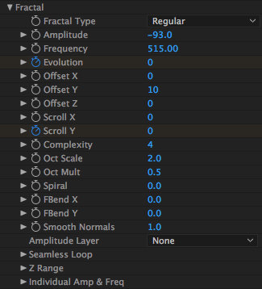
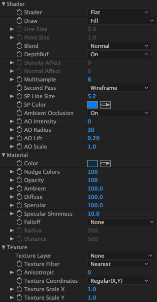
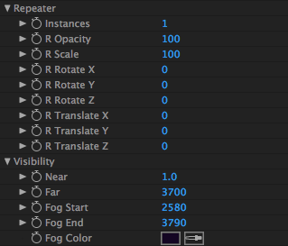
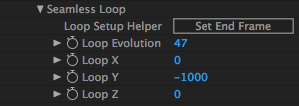

So you are here because you want to generate this lovely outrun scene, huh?

Let´s start with the requirements.
For this project you will just need two (expensive) things:
1.After Effects
2.Trapcode Mir from RED GIANT
Start by creating a new Comp with this settings:
Preset HDTV 1080 24 with 00:05:01 duration
My comp lasts 5 seconds: I think this duration is sufficient for a nice infinite loop that doesn't feel repetitive.
The background
Generate a new solid and add Gradient Ramp effect from the Effects and Presets menu. Choose this setting:

The sun
Draw a new circle shape. My layer position for the circle is 960 on X, 430 on Y. Then add a Gradient Ramp Effect, #FFF500 as the Start Color, #FF00D6 as the End Color. The final step is to add some rectangular masks to make the empty spaces in the sun. As you go down the shape, try to make bigger rectangles
*I like to add a Fast blur effect for this type of work.
Cool moving mountains
First, add a new solid and add Mir effect
Now i´ll give you the Mir setting from the Effects and Presets menu.
Geometry

Fractal

Shader, material and texture

#003A54 for Color in the material section
Repetear & visibility

After copying this setting, keyframe Evolution and Scroll Y on 00:00:00 then go to 00:05:00 and keyframe the same effects with 47 in evolution and -1000 in Scroll Y.
For the last part go to Seamless Loop under the Fractal menu and enter this values:

For better, looping trim the working area 1 frame before the end of the Comp.
Now you have 80est and trendiest scene in this Jibba Jabba planet.
Comments and shares are welcomed.